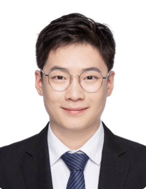

Postdoctoral Researcher | Human-Computer Interactions | Cognitive Neuroscience

I am a postdoctoral researcher at the University of Geneva. My research focuses on human–computer interaction and cognitive neuroscience, combining neuroimaging (EEG/MEG/fNIRS), virtual reality, neurofeedback, behavioral measures, and computational modeling.
Email: bohao.tian@unige.ch
Address: Chem. des Mines 9, 1202 Geneva, Switzerland